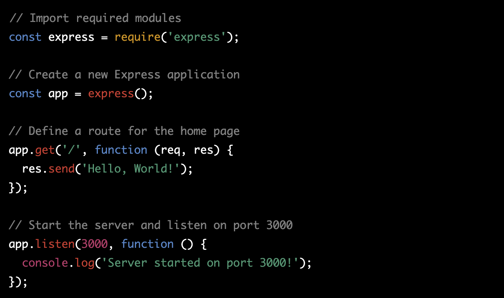

What is a Nodejs?
Node.js is a popular open-source, cross-platform, JavaScript
runtime environment that allows developers to build fast,
scalable, and server-side applications using JavaScript.
Node.js uses an event-driven, non-blocking I/O model that
makes it efficient and lightweight. It is built on the V8
JavaScript engine from Google, which is the same engine that
powers the Google Chrome web browser. Node.js enables
developers to use JavaScript for both client-side and
server-side programming, allowing for code reuse and making
it easier to build real-time web applications. Node.js has a
large and active community of developers who contribute to
its ecosystem of libraries and frameworks, making it one of
the most popular tools for web development.
Example
Sure, here's an example of a simple Node.js application that
uses the popular Express framework to create a web server
that responds with "Hello, World!" to incoming requests:

This code imports the express module, creates a new Express
application, defines a route for the home page that sends a
"Hello, World!" response, and starts the server listening on
port 3000. When you run this code using Node.js, you can
access the application by navigating to
http://localhost:3000 in a web browser, and you should see
the "Hello, World!" message displayed.